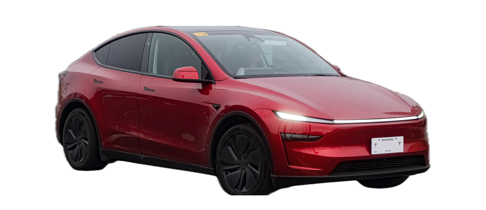
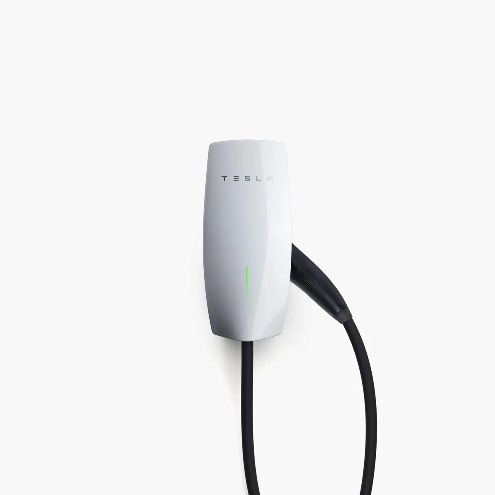
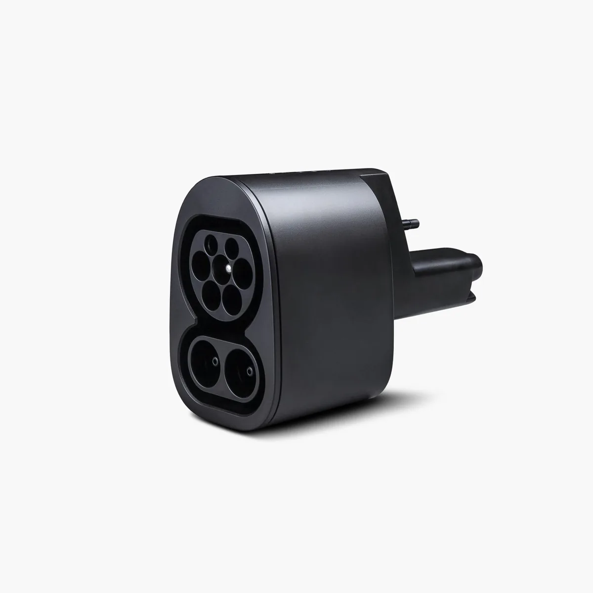
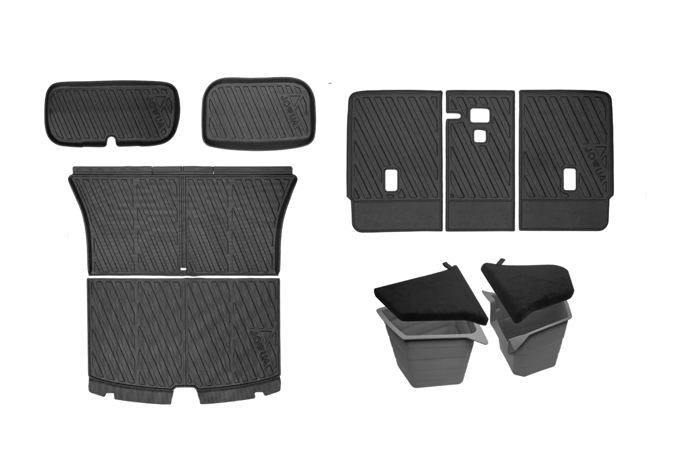
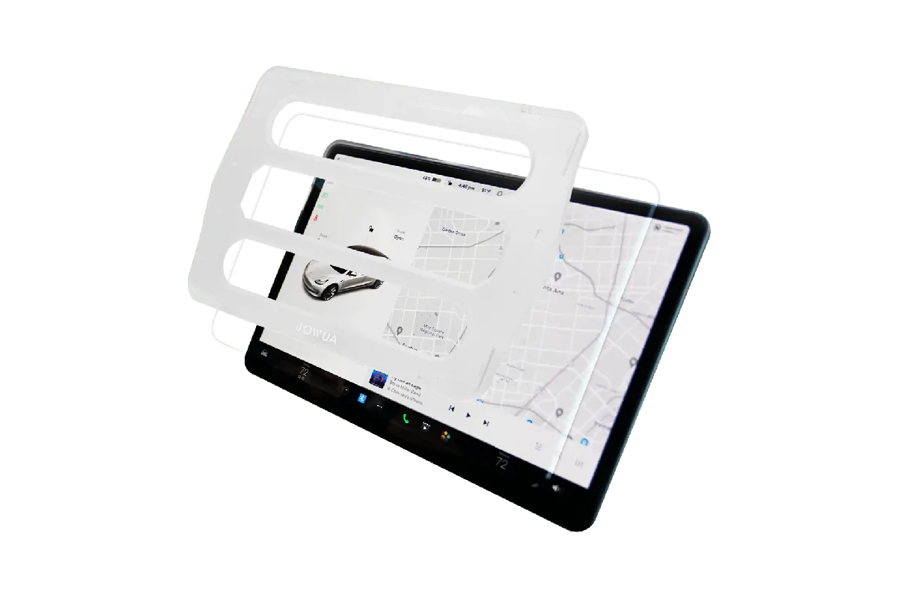

慢充看 Type 2 或 TPC，第三方快充看 CCS2。舊車、二手車先看充電孔和交付日期。
- 2021-08-01 前交付車常見 TPC 判斷點。
- CCS2 轉接頭標示最高 250 kW，官方註明不適用慢充。

慢充看 Type 2 或 TPC，第三方快充看 CCS2。舊車、二手車先看充電孔和交付日期。
有固定車位先估家充比例；無家充先列每週固定可用站點，再把停車費和等待時間放進成本。
胎壓、胎面、定位和換位週期會影響耗電、噪音與年度花費。
買中古車或保固快到期前，基本保固、電池保固、驅動單元保固要分開核對。
車型配對
按 2025+、2021-2024、2024+ Model 3、2021-08-01 前 TPC 分組。每組列慢充、快充、先買配件、避開項目。
Type 2 慢充、第三方快充以車端 CCS2 或適配狀態判斷，配件需看 2025+ 標示。




查核資料
下列資料以 2026-06-05 查核為準。EPA 表列耗電與續航；保固、保養與超充規則採 Tesla 台灣支援頁面。
EPA 2026 Model Y LR AWD
17.1 kWh/100 km。原始值 27.4959 kWh/100 mi；EPA 續航 327 mi，換算約 526 km。 FuelEconomy.gov ID 49744新車基本保固
4 年 或 80,000 公里，以先到者為準。中古車、延長保固與車輛隨附條款仍需個別核對。 Tesla 台灣保固Model 3 / Y 電池保固
70% 台灣 Model Y RWD 為 8 年或 160,000 公里；Model Y LR/Performance AWD 為 8 年或 192,000 公里，保固期內至少保持 70% 電池容量。 Tesla 台灣保固超充佔用成本
NT$15 台灣一般擁堵費每分鐘 15 元，最高可達每分鐘 30 元；繁忙站點且電量達 80% 或充電結束時可能收取。 Tesla 超充費用以先到者為準。交車後先記到期日與里程。
事故、警示燈、異常提示不要拖到保固尾端。
電池與驅動單元，保固期間至少 70% 電池容量。
電池與驅動單元，車型版本要和保固條款對上。
限材料或工藝缺陷導致由內向外的生鏽孔洞。
買轉接頭、旅充、壁掛座前先看來源與車端規格。
能耗基準
輪圈、氣候、車速和駕駛方式會讓實際耗電不同。這張表只拿來當試算基準，不當保證續航。
| 車款 | 綜合能耗 | EPA 續航 | MPGe | 來源 |
|---|---|---|---|---|
| Model Y Long Range RWD | 15.7 kWh/100 km | 357 mi / 575 km | 134 | ID 49743 |
| Model Y Long Range AWD | 17.1 kWh/100 km | 327 mi / 526 km | 123 | ID 49744 |
| Model Y Standard RWD 19" | 16.0 kWh/100 km | 303 mi / 488 km | 131 | ID 50041 |
| Model Y Performance AWD | 19.9 kWh/100 km | 306 mi / 492 km | 105 | ID 50253 |
| Model 3 Standard RWD | 15.1 kWh/100 km | 321 mi / 517 km | 139 | ID 50251 |
| Model 3 Premium AWD | 16.4 kWh/100 km | 346 mi / 557 km | 128 | ID 50037 |
台灣充電環境
Type 2 是 AC 慢充；CCS2 是 DC 快充；TPC 主要出現在早期 Tesla。J1772、CCS1、CHAdeMO 多用在舊站或他牌車。
家用壁掛式充電座、目的地充電與部分停車場慢充多屬這一類。Tesla 台灣說明壁掛式充電座可支援具 Type 2 充電規格的他牌電動車。
台灣第三方快充與新式快充站會遇到 CCS2。Tesla 台灣商店的 CCS2 轉接頭支援最高 250 kW，但明確標示不適用於慢充充電樁。
台灣仍會遇到 TPC 車與 TPC 充電設備。Tesla 台灣商店同時販售 Type 2 壁掛式充電座與 TPC 壁掛式充電座，代表車主必須先確認自己車端規格。
台灣測試與公共環境可能看到多種介面。ARTC 列出台灣 CNS AC、SAE J1772、IEC Type 2、CHAdeMO、CCS1、CCS2 等主流介面。
轉接頭判斷
高電流快充需確認車端相容、轉接頭用途、設備檢定與計費方式。
以車輛充電孔與車主手冊為準，避免只用年份或車型推測。
Tesla CCS2 轉接頭產品頁標示不適用於慢充；慢充與快充需分開判斷。
經濟部標檢局提醒充電前要確認介面相容，並避免在高電流充電情境使用不明轉接頭。
家充、台電時間電價與夜間排程會決定日常成本；社區車位需確認管委會流程、電容量、施工與擴充空間。
列出每週固定使用的公司、商場、賣場、旅館與超充站；成本需納入電價、停車費、等待時間與站點滿載率。
Tesla 超充與第三方 CCS2 快充都可納入路線；出發前確認槍頭、營業時間、尖離峰、會員 App 與目的地過夜補電。
購車與配件
購車推薦碼、配件商店與分潤申請入口集中在這裡。配件規格與圖片在圖鑑頁。
Tesla 推薦碼
透過這個 Tesla 推薦連結購車，最高可折抵 NT$8,000。實際優惠、適用車款與活動期間，仍以 Tesla 結帳頁顯示為準。
https://ts.la/wulingteen795928
Tesla 配件品牌，品項偏內裝、防護、收納與充電周邊。官方提供 affiliate program 頁面。
美國 Tesla 配件商，品項多，適合補充台灣不容易買到的外觀、收納與保護類配件。
Tesla / Rivian 配件商，頁尾有分潤申請入口。適合找保護貼、內裝整理和小型實用配件。
導購揭露：Tesla 推薦連結可能帶來購車優惠或推薦回饋。配件頁列出商店與分潤申請入口；實際分潤依商店核准帳號與追蹤連結為準。
車主經驗
每週查家充比例、胎壓胎面、保險保固、OTA 變化與維修等待。這些項目會改變年度成本。
檢查清單
日常看胎壓和補電；長途看快充與備用站；保養看輪胎、濾網、煞車油。
電量上限、家充時段、停車位置、胎壓。
耗電變化、雨刷、胎面、異音或提醒。
快充站、備用站、目的地停車與天氣。
保險、輪胎、二手估價、保固日期。
日常
快充速度、站點空位、尖離峰價差與電池預熱，都會影響實際停留時間。
長途
逆風、雨天、滿載、冷氣和山路都會拉高耗電。長途規劃寧可多留 10% 到 15% 電量。
日常
高速快充頻率、長時間高電量停放、氣候與輪胎設定都會影響耗電與衰退。 固定的充電與停放習慣比單次續航數字更重要。
保養
電動車扭力大、車重高，輪胎耗損常比新車主想像快。定期看胎壓、胎面和定位會省下不少麻煩。
日常
續航估算、雨刷、輔助駕駛、車機反應和安全提醒都可能被軟體更新改變。 更新後建議記錄一週，並核對發布說明。
保養
事故鈑噴、料件等待、保險理賠和代步安排，會比一般保養更影響車主體驗。
成本試算
試算
預設耗電採 EPA 2026 Model Y Long Range AWD 換算值 17.1 kWh/100 km；家充預設採台電表燈簡易型時間電價夏月離峰 NT$2.06/kWh。外部快充會依站點與時段變動，請用 Tesla App 顯示價格覆蓋。
買車前
Tesla 台灣保養頁建議：Model 3 / Y 車廂空氣濾網每 2 年更換；輪胎每 10,000 公里或胎紋差大於 1.5 公厘時換位；煞車油每 4 年檢測一次。
速查結論
有固定車位，用台電時間電價、年里程、家充比例和輪胎預算估成本；無固定車位，先用外部快充價格估上限。
每週至少列一個主站和一個備用站，包含超充、第三方快充、公司或商場慢充。停車費、等待時間、會員 App 都放進成本。
股價頁只作附錄。首頁動線放充電、耗電、保養、保固、配件、交車與長途用車資訊。
資料來源
官方資訊以 2026-06-05 查核為準。電價、保險、維修等待與充電費率會依地區與時間變動，試算時需改成實際條件。